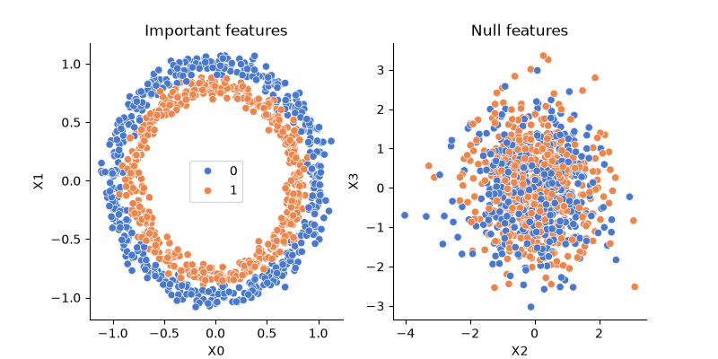
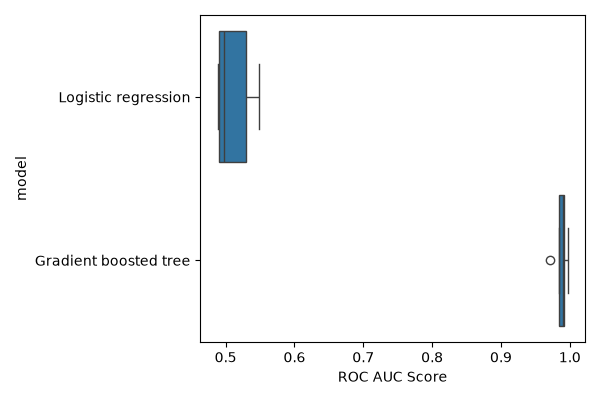
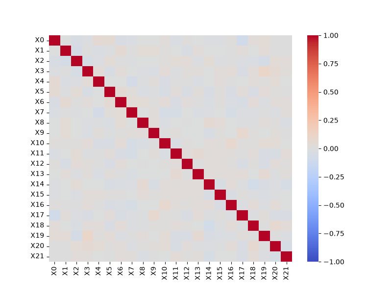
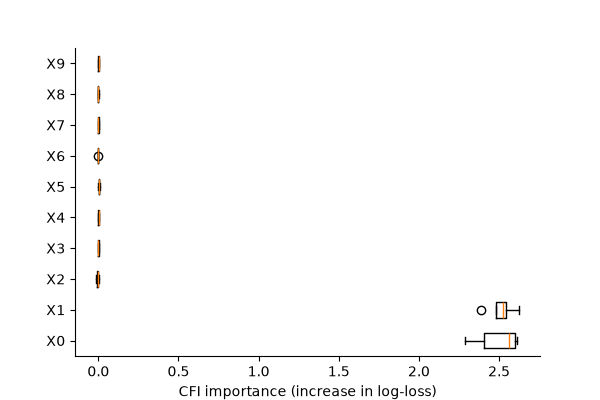
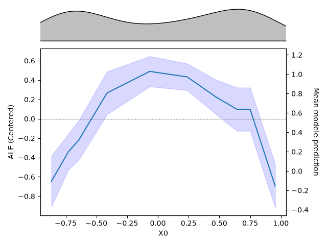
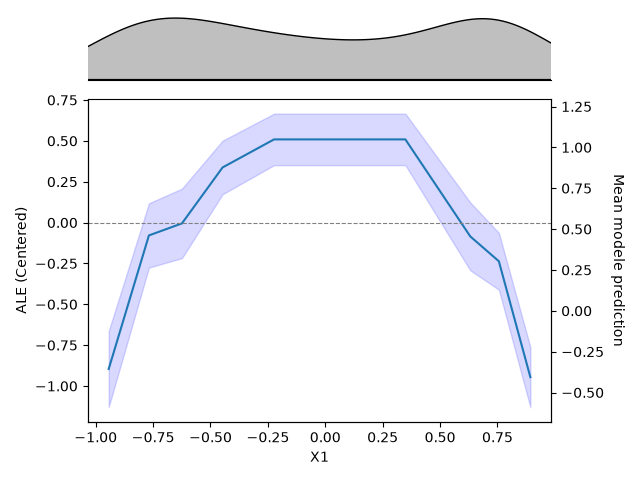

Note
Go to the end to download the full example code.
Overview of a feature importance analysis with hidimstat#
This example walks through a complete feature importance analysis: selecting a predictive model, analyzing the correlation structure of the features, measuring the importance of each feature, selecting features with statistical guarantees, and visualizing the importance and the effects of the selected features.
It illustrates one possible path through these steps. For each of them, hidimstat provides several alternatives, which are listed in the API documentation and described in the user guide. The most relevant ones are pointed out along the way, so that each step can be swapped for the variant that best matches a given problem.
Loading the data#
We load the make_circles() classification dataset and
append noisy, uninformative features to it. The goal of the analysis is to
recover the truly informative features (\(X_0\) and \(X_1\)) among the
uninformative ones.
import matplotlib.pyplot as plt
import numpy as np
import seaborn as sns
from sklearn.datasets import make_circles
n_samples, n_features, n_informative = 1000, 22, 2
X, y = make_circles(
noise=0.05,
n_samples=n_samples,
random_state=0,
)
rng = np.random.default_rng(0)
X = np.hstack(
[
X,
rng.standard_normal(size=(n_samples, n_features - n_informative)),
]
)
feature_names = [f"X{i}" for i in range(n_features)]
_, axes = plt.subplots(1, 2, figsize=(8, 4))
ax = axes[0]
sns.scatterplot(
x=X[:, 0],
y=X[:, 1],
hue=y,
palette="muted",
ax=ax,
)
ax.set_xlabel(feature_names[0])
ax.set_ylabel(feature_names[1])
ax.set_title("Important features")
ax = axes[1]
sns.scatterplot(
x=X[:, 2],
y=X[:, 3],
hue=y,
palette="muted",
ax=ax,
legend=False,
)
ax.set_title("Null features")
ax.set_xlabel(feature_names[2])
ax.set_ylabel(feature_names[3])
sns.despine()
plt.show()

Selecting a predictive model#
The first step of a variable importance analysis is to select the predictive model used to learn the relationship between the features and the target variable. This estimator can be any scikit-learn compatible model. Here we compare a linear model (logistic regression) with a non-linear one (gradient boosted trees).
The quality of this model matters: the importance scores describe what the model has learned, so they are only informative about the data if the model fits the data well. See Definition of concepts for a discussion of this point.
import pandas as pd
from sklearn.ensemble import HistGradientBoostingClassifier
from sklearn.linear_model import LogisticRegression
from sklearn.metrics import roc_auc_score
from sklearn.model_selection import KFold
n_folds = 5
cv = KFold(n_splits=n_folds, shuffle=True, random_state=0)
candidates = {
"Logistic regression": LogisticRegression(),
"Gradient boosted tree": HistGradientBoostingClassifier(random_state=0),
}
scores = []
for train_idx, test_idx in cv.split(X):
X_train, X_test = X[train_idx], X[test_idx]
y_train, y_test = y[train_idx], y[test_idx]
for name, model in candidates.items():
model.fit(X_train, y_train)
scores.append(
{
"model": name,
"score": roc_auc_score(
y_test, model.predict_proba(X_test)[:, 1]
),
}
)
df_scores = pd.DataFrame(scores)
_, ax = plt.subplots(figsize=(6, 4))
sns.boxplot(x="score", y="model", data=df_scores, ax=ax)
ax.set_xlabel("ROC AUC Score")
plt.tight_layout()
plt.show()

As expected from the visualization of the data, which shows that the two classes are not linearly separable, the non-linear model performs better. We therefore use the gradient boosted tree model for the rest of the analysis.
Note
When the relationship is known to be linear and the data are
high-dimensional, importance can be derived directly from the model
coefficients rather than from a model-agnostic procedure. See
Generalized Linear Model (GLM) Coefficient and the sparse linear model methods, such as DesparsifiedLasso.
Visualizing the correlation structure#
Inspecting the correlation between features is a useful preliminary step. When high correlations are present, it may indicate that features are redundant, in which case their conditional importance will vanish: this follows from the definition of conditional importance, and holds for any conditional estimator. In such circumstances measuring the importance of groups of features may be more appropriate, see Measuring the importance of feature groups. Here, by construction, the features are uncorrelated.
corr = pd.DataFrame(X, columns=feature_names).corr()
_, ax = plt.subplots(figsize=(8, 6))
sns.heatmap(corr, cmap="coolwarm", center=0, vmin=-1, vmax=1, ax=ax)
plt.show()

Measuring variable importance#
Hidimstat implements various methods for measuring variable importance, which
are listed in the Feature Importance Classes section of the API. Here we use CFI
(CFI), a good default choice: unlike simpler methods such
as permutation importance (PFI), it accounts explicitly for the
dependencies between features, while being computationally more efficient and
statistically more powerful than methods such as LOCO
(LOCO). These trade-offs are detailed in
Conditional Feature Importance,
Permutation Feature Importance and Leave-One-Covariate-Out.
CFI estimates variable importance as the increase in loss observed when the
feature of interest is perturbed, here by replacing it with a sample drawn
from its conditional distribution given the other features (see
ConditionalSampler). Since this is a
classification problem, we use the log-loss. Finally, to make use of all the
available data, we repeat this procedure in a cross-validated manner with the
CFICV class.
from sklearn.metrics import log_loss
from hidimstat import CFICV
vim = CFICV(
estimators=HistGradientBoostingClassifier(random_state=0),
method="predict_proba", # log-loss is computed on predicted probabilities
loss=log_loss,
cv=cv,
random_state=0,
)
vim.fit(X, y)
importances = vim.importance(X, y)
Fitting estimators for each fold: 0%| | 0/5 [00:00<?, ?it/s]
Fitting estimators for each fold: 20%|██ | 1/5 [00:00<00:01, 3.85it/s]
Fitting estimators for each fold: 40%|████ | 2/5 [00:00<00:00, 3.86it/s]
Fitting estimators for each fold: 60%|██████ | 3/5 [00:00<00:00, 3.80it/s]
Fitting estimators for each fold: 80%|████████ | 4/5 [00:01<00:00, 3.82it/s]
Fitting estimators for each fold: 100%|██████████| 5/5 [00:01<00:00, 3.87it/s]
Fitting estimators for each fold: 100%|██████████| 5/5 [00:01<00:00, 3.85it/s]
Fitting importance estimators for each fold: 0%| | 0/5 [00:00<?, ?it/s]
Fitting importance estimators for each fold: 40%|████ | 2/5 [00:00<00:00, 19.73it/s]
Fitting importance estimators for each fold: 100%|██████████| 5/5 [00:00<00:00, 21.26it/s]
Fitting importance estimators for each fold: 100%|██████████| 5/5 [00:00<00:00, 21.02it/s]
Computing importance scores over folds: 0%| | 0/5 [00:00<?, ?it/s]
Computing importance scores over folds: 20%|██ | 1/5 [00:02<00:10, 2.57s/it]
Computing importance scores over folds: 40%|████ | 2/5 [00:05<00:07, 2.50s/it]
Computing importance scores over folds: 60%|██████ | 3/5 [00:07<00:04, 2.49s/it]
Computing importance scores over folds: 80%|████████ | 4/5 [00:09<00:02, 2.48s/it]
Computing importance scores over folds: 100%|██████████| 5/5 [00:12<00:00, 2.49s/it]
Computing importance scores over folds: 100%|██████████| 5/5 [00:12<00:00, 2.49s/it]
Visualizing the importance#
We can now visualize the importance of the features. importances has one
row per feature and one column per cross-validation fold, so a boxplot shows
both the magnitude of each score and its variability across folds. Here we
display the first ten features. The
plot_importance() method offers a ready-made summary
plot of all features.
_, ax = plt.subplots(figsize=(6, 4))
ax.boxplot(importances[:10, :].T, orientation="horizontal")
ax.set_yticklabels(feature_names[:10])
ax.set_xlabel("CFI importance (increase in log-loss)")
sns.despine(ax=ax)
plt.show()

Only \(X_0\) and \(X_1\) stand out: perturbing them degrades the log-loss, whereas perturbing the uninformative features leaves it unchanged, with importance scores fluctuating around zero.
Feature selection#
Features can then be selected with guaranteed control of the false discovery
rate (FDR) using the
fdr_selection() method, which applies the
Benjamini-Hochberg procedure to the p-values computed by CFI.
selected_features = vim.fdr_selection(fdr=0.05)
print(f"Number of selected features: {selected_features.sum()}")
print(
f"False discoveries: {selected_features[n_informative:].sum()} "
f"out of {n_features - n_informative} uninformative features"
)
Number of selected features: 2
False discoveries: 0 out of 20 uninformative features
Note
Other selection criteria. The same fitted object also provides
fwer_selection() for the more conservative
family-wise error rate, pvalue_selection() for
uncorrected thresholding of the p-values, and
importance_selection() when no statistical
guarantee is needed (top-k features, percentile, or a threshold on the
scores). These error rates are defined in Statistical guarantees for variable selection.
Visualizing the dependencies#
Importance scores say how much a feature matters, not how it acts on the
prediction. Visualization methods answer the latter question. Here we use
accumulated local effects (ALE); the
alternatives are presented in Tools for visualization.
from sklearn.model_selection import train_test_split
from hidimstat.visualization import ALE
X_train, X_test, y_train, y_test = train_test_split(
X, y, test_size=0.2, random_state=0
)
model = HistGradientBoostingClassifier(random_state=0).fit(X_train, y_train)
viz = ALE(estimator=model, feature_names=feature_names)
We plot the two selected features side by side.
for feature in range(n_informative):
viz.plot(
X_test,
features=feature,
method="predict_proba",
cmap="RdBu",
)


These plots show how the prediction of the model changes with the value of each selected feature: class 0 (the outer circle) is predicted for low and high values of \(X_0\) and \(X_1\), whereas class 1 (the inner circle) is predicted for intermediate values. Both features act symmetrically, as expected from the radial structure of the data.
Going further#
Each step above can be swapped for another building block of the library:
Importance measure: CFI is one option among several, which differ in what they condition on and in how they perturb or refit the model. See Model-agnostic methods, Marginal methods, and Feature Importance Classes for the full list.
High-dimensional data: when the number of features becomes large relative to the number of samples, per-feature inference gets both expensive and less powerful. The difficulty and the estimators that address it are discussed in Inference in high dimension.
Correlated features: the
features_groupsargument of the importance classes measures the importance of groups of features rather than of individual ones. See Measuring the importance of feature groups.Selection criterion: FDR, FWER, raw p-values or plain thresholding of the scores, as described in Statistical guarantees for variable selection.
Visualization:
ALEandPDP, see Tools for visualization.
The user guide covers these choices in depth, and each class in the API documentation points to the publication it implements.
Total running time of the script: (0 minutes 19.369 seconds)
Estimated memory usage: 202 MB